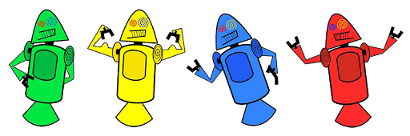

História do mascote do Android
Provavelmente você sabe que o sistema operacional Android, mantido pelo Google é um dos mais utilizados para dispositivos móveis em todo o mundo. Mas talvez você não saiba que o seu simpático mastoce tem um nome e uma história muito curiosa? Pois acompanhe esse artigo para aprender muita coisa sobre esse robozinho.
A primeira versão
A primeira versão tentativa de criar um mascote surgiu em 2007 e veio de um desenvolvedor chamado Dan Morril. Ele conta que abriu o Linscape ( Sofftware para livrevetorização de imagem) e criou sua própria versão de robô. O objetivo era apenas persolaizar o sistema para a sua equipe, não existia nenhuma solicitação da empresa para a criação de um mascote
Essa primeira versão bizarra até foi batizada em homenagem ao seu criador: seriam os Dandroides
Surge um novo mascote
A ideia de ter um mascte foi amadurecendo e a missão foi passada para um profissional da área. A ilustradora Irina Blok também funcionaria do Google, ficou com a missão de representar o pequeno robô de uma maneira agradável.

A ideia principal era reprentar tudo graficamente com poucos traços e de forma mais
chapada. O desenho também deveria gerar identificação rápida com quem o olha. Surgiu então o Bugdroid. O novo mascote da Android